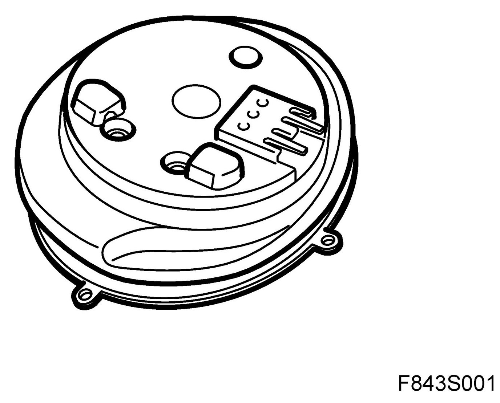
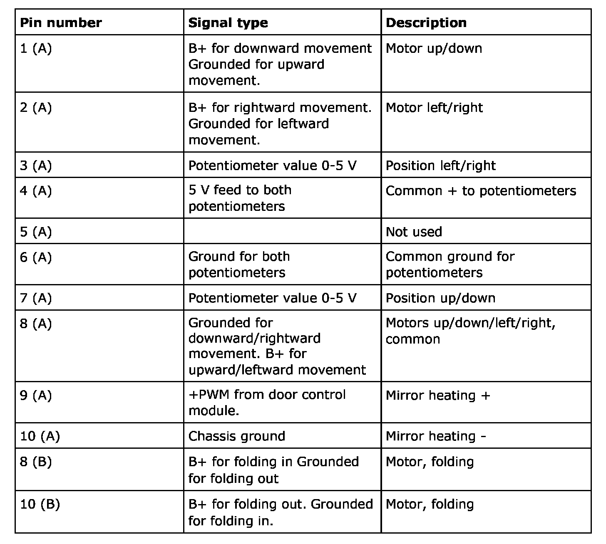
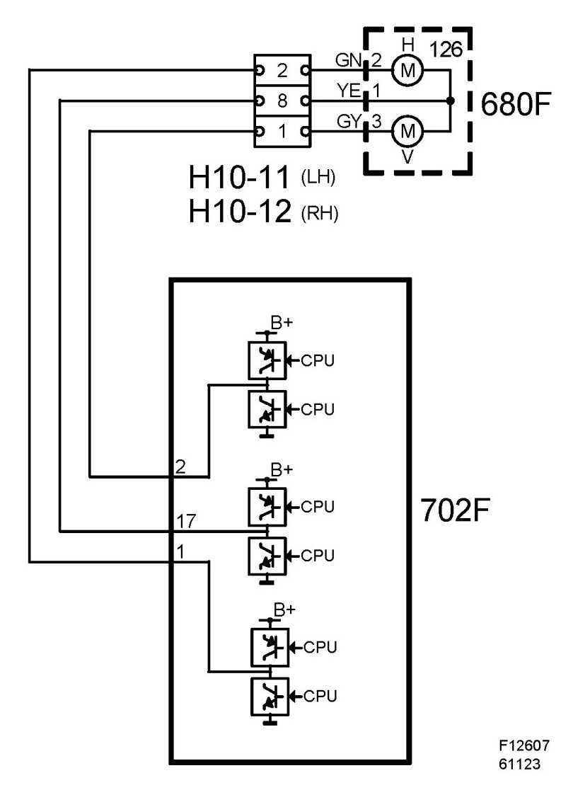
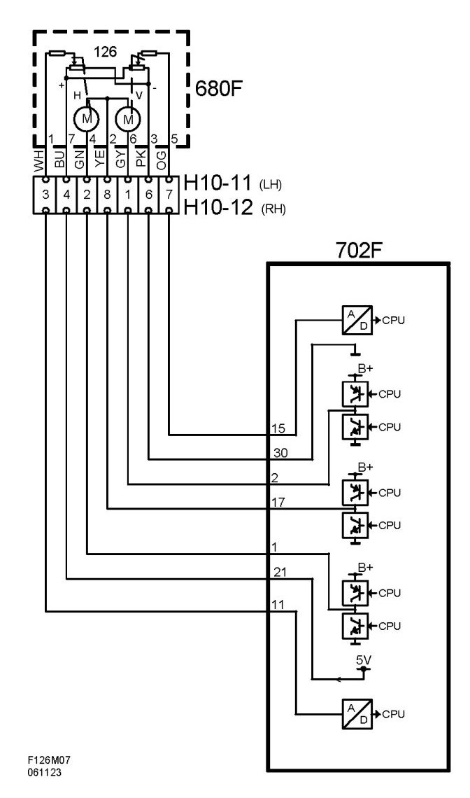

Power Mirror Motor: Description and Operation
Motor, Electrically Adjustable Door Mirror (126)
Location
Motor, electrically adjustable door mirror, left-hand (126)
Motor, electrically adjustable door mirror, right-hand (126)

Main task
Purpose of motor unit:
- Angle the mirror as desired by the driver.
- Detect the position of the mirror so that this can be stored (mirrors with memory, option)
- Fold the door mirrors in or out (option).
Type
The door mirror has one motor for angling the mirror glass to the left and right and one for angling it up and down. Both motors are 2-pole motors. Their polarity is reversed to run them in the opposite direction. The motors of mirrors with memory function each have a potentiometer. Electrically foldable mirrors have an additional motor. This is also a 2-pole motor, the polarity of which is reversed to run it in the opposite direction.
Connect
Electric motor for mirror glass
The motors are 2 pole and connected with their own separate wiring and common wiring to the door control module.
Potentiometers
The sensors are connected by 4 wires to the door control module. The sensors have a common 5 V power supply and ground. They each have a signal cable to the door control module. The voltage from each potentiometer is converted into a digital value. The control module input has a highohmic resistor connected to 5 V. The purpose of this voltage is to ensure that the voltage on the pin goes to 5 V in the event of a power loss, so that a DTC can be generated.
Electric motor for foldable door mirror
The motor is 2-pole and is connected to the door control module.

Door mirror without memory:

Door mirror with memory:
